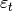
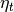

statsmodels.tsa.statespace.structural.UnobservedComponentsResults.simulate¶
-
UnobservedComponentsResults.simulate(nsimulations, measurement_shocks=None, state_shocks=None, initial_state=None)¶ Simulate a new time series following the state space model
Parameters: nsimulations : int
The number of observations to simulate. If the model is time-invariant this can be any number. If the model is time-varying, then this number must be less than or equal to the number
measurement_shocks : array_like, optional
If specified, these are the shocks to the measurement equation, . If unspecified, these are automatically generated using a pseudo-random number generator. If specified, must be shaped nsimulations x k_endog, where k_endog is the same as in the state space model.
state_shocks : array_like, optional
If specified, these are the shocks to the state equation, . If unspecified, these are automatically generated using a pseudo-random number generator. If specified, must be shaped nsimulations x k_posdef where k_posdef is the same as in the state space model.
initial_state : array_like, optional
If specified, this is the state vector at time zero, which should be shaped (k_states x 1), where k_states is the same as in the state space model. If unspecified, but the model has been initialized, then that initialization is used. If unspecified and the model has not been initialized, then a vector of zeros is used. Note that this is not included in the returned simulated_states array.
Returns: simulated_obs : array
An (nsimulations x k_endog) array of simulated observations.